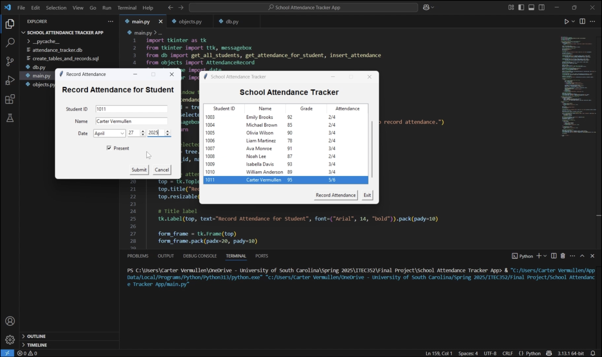

Program Demonstration

Developed Python tkinter application with SQLite backend; implemented object-oriented and modular design for attendance tracking, report generation, and data integrity.
This project features the development of a Python desktop application that tracks and manages student attendance through a graphical interface built with Tkinter and a SQLite database backend. Created for the Software Design (ITEC 352) course, the School Attendance Tracker was developed using object-oriented programming and modular architecture, dividing the program into three main components: main.py for the user interface, objects.py for class structures, and db.py for database operations. The application includes a main window for viewing student records and a secondary screen for recording attendance with date selectors, validation logic, and error handling to ensure data accuracy.
The project demonstrates the full software design process, including UI planning, UML modeling, database normalization, and functional implementation. Two UML class diagrams (Student and AttendanceRecord) and two normalized database tables were designed in 3NF to maintain relational integrity between student and attendance data. The Tkinter interface was planned in Figma and incorporates widgets such as buttons, checkboxes, spinboxes, and text boxes to support user interaction. Validation messages and input controls were added to prevent errors and maintain database consistency, while the program's structure supports maintainability and scalability.
Through this project, I strengthened my skills in object-oriented programming, database integration, and GUI development in Python. I also gained experience debugging in VS Code using step-through tools. The School Attendance Tracker reflects a balance of front-end design, back-end logic, and structured documentation, earning full marks across all rubric categories and showcasing my ability to design, develop, and present complete, modular applications aligned with professional software engineering practices.
